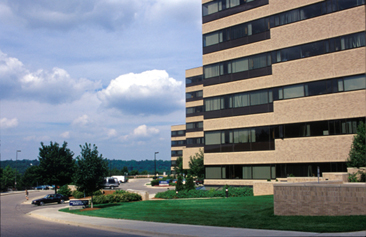

<div id="contact" style="width:50%; height:380px">
<iframe frameborder='0' height='350' marginheight='0' marginwidth='0' scrolling='no' src='http://maps.google.com/maps?f=q&amp;source=s_q&amp;hl=en&amp;geocode=&amp;q=Dr.-Bohr-Gasse+7,+Wien,+%C3%96sterreich&amp;aq=t&amp;sll=37.0625,-95.677068&amp;sspn=59.337006,77.958984&amp;ie=UTF8&amp;hq=&amp;hnear=Dr.-Bohr-Gasse+7,+Landstra%C3%9Fe+1030+Wien,+Austria&amp;ll=48.19287,16.403875&amp;spn=0.019854,0.036478&amp;z=14&amp;iwloc=A&amp;output=embed' width='425'>
        <p>Your browser does not support iframes.</p>
</iframe>
</div>

<div id="contact" style="width:50%">
<b>Dr. Alan Boyle</b><br>

Email: <a href="mailto:apboyle@umich.edu">apboyle@umich.edu</a><br>
Phone: (734) 763-7382<br>
Office: 2049A Palmer Commons<br>
<br>

<b>Shipping:</b><br>
Alan Boyle, Ph.D.<br>
2017 Palmer Commons<br>
100 Washtenaw Ave.<br>
Ann Arbor, MI 48109<br>
<br>
</div>

<div id="contact" style="width:100%">

</div>

<div id="contact">
<b>Lab</b><br>
The laboratory is located in the Medical Science Research Building (MSRB) I on the 4th floor on University of Michigan's North Campus.<br><br>
Phone: <br>
<br>

<b>Shipping:</b><br>
Alan Boyle, Ph.D.<br>
4526 MSRB I<br>
1150 W. Medical Center Drive<br>
Ann Arbor, Michigan 48109-5602<br>

</div>
<div id="contact">

</div>

